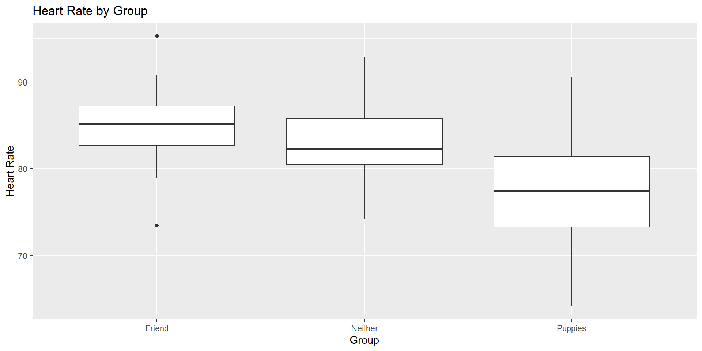
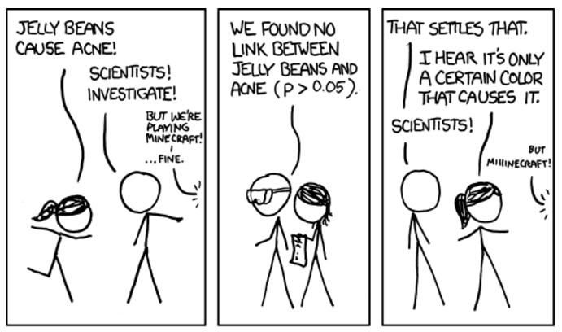
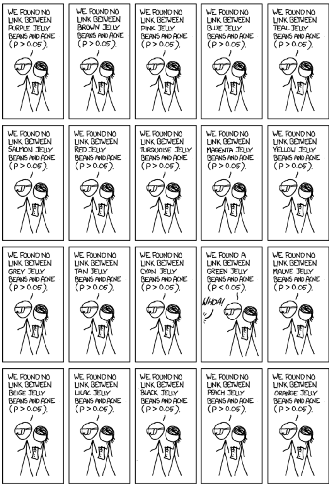
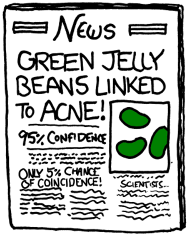
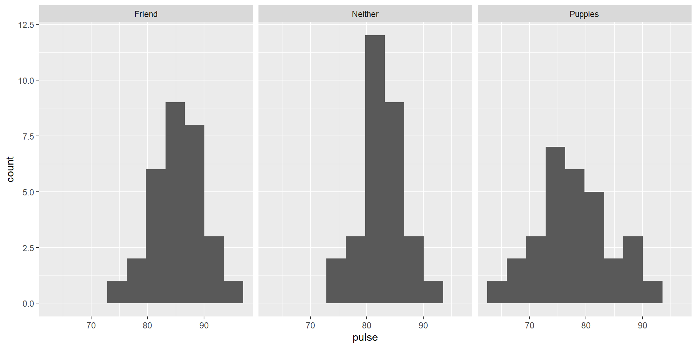
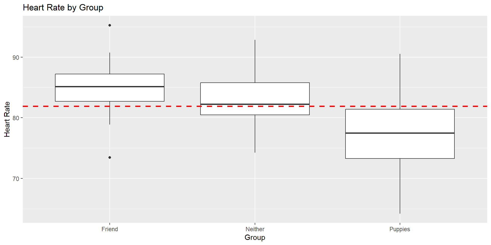
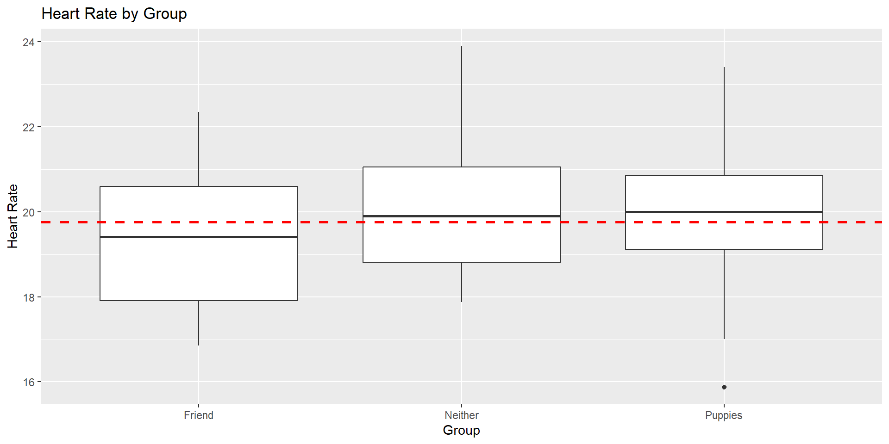

Lecture 12: ANOVA
BIOS 600 - Spring 2026
Announcements
HW 5 due Thursday March 5th at 11:59pm.
Lab 6 has been posted and due on March 6th at 11:59 pm
I will be out of the office the week of March 9–13. While I will have access to email, I will be unable to hold office hours. Please reach out to the TAs and tutors for assistance
Tutor Molly Hoch, will be guest lecturing
Annoucements
You can redo/correct questions for Exam 1 for up to half the points back
For T/F and multiple choice questions this will involve adding one or two sentences explaining the choice
Upload a scanned copy of both your exam and separate sheets of reworked questions to Canvas under Exam 1 - Corrected Problems
If you need additional time past March 6th please reach out
Two independent sample t-test
From the dataset licorice (data = licorice), I am interested in comparing the average value of pacu30min_throatPain among those with different values of the variable trt (which defines my two samples)
Paired two-sample t-test
From the dataset training_diff, I want to know if the average of the variable diff in that dataset is 0.
Questions from last week
Questions from last week
Overview
Comparing more than two means
ANOVA test and how it relates to a t-test
Multiple comparisons issue and Inflated type I error rates
Pulse example: ANOVA
Bonferroni Correction
Very optional reading
P&G: Chapter 12
OI: 7.5
Puppies
Experiment: Pets and Stress Level
For today’s topic, we will consider an experiment where heart rates were measured (as a proxy for stress level) for a group of \(n=90\) students after 10 minutes of being under certain conditions.
The 3 Conditions/Groups: Of the 90 total students, 30 students spent time holding puppies, 30 students sat alone, and 30 students chatted with a friend.
After 10 minutes, each student’s heart rate was measured.
Research Question: Is there a group (puppies, friend, alone/neither) associated with lower heart rate compared to the others?
Let’s take a look at the data on the next slide.
Distribution of heart rate data

How do we compare across three groups? Which groups are different?
Example: pets and stress
We are interested in testing
\[H_0: \mu_P = \mu_F = \mu_N\]
against the alternative that at least one mean is different from the others.
One way to do this would be to use t-tests on all possible pairs of tests (here there are just three - how many pairs of tests would this be?). However, if we have more groups, this becomes quite complicated.
For example, with 10 groups we need to do \(10\choose {2}\) = 45 tests!
Review: Error rates
Tip
In groups, fill in the blanks:
- Suppose we test the null hypothesis \(H_0\):\(\mu = \mu_0\). We could potentially make two types of errors:
| Truth | \(\mu = \mu_0\) | \(\mu \neq \mu_0\) |
|---|---|---|
| Fail to reject \(H_0\) | correct decision | ____________ |
| Reject \(H_0\) | ___________ | correct decision |
How would you explain the following in words?
- Type I Error: ____________
- Type II Error: ____________
Multiple comparisons
Now that we’ve reviewed Type I and Type II errors, we need to discuss multiple comparisons - an important concept in statistics.
Back to our pet example. What if we had 10 groups?
In addition to being time-consuming, carrying out multiple tests can lead to inflated Type I error rates which puts into question the validity of a given study if these multiple comparisons are not accounted for.
Multiple comparisons in action: overall test

Extra tests…whoa!

Green jelly beans!

So what went wrong?
Multiple comparisons
Consider our pets / stress example, where we had three pairwise comparisons.
- Suppose all means are truly equal and we conduct all three pairwise tests
\(H_0\): \(\mu_P = \mu_F\) vs. \(H_A\): \(\mu_P \neq \mu_F\)
\(H_0\): \(\mu_P = \mu_N\) vs. \(H_A\): \(\mu_P \neq \mu_N\)
\(H_0\): \(\mu_N = \mu_F\) vs. \(H_A\): \(\mu_N \neq \mu_F\)
Suppose also the tests are independent and done at a 0.05 significance level
Then the probability we fail to reject all three tests if the null hypothesis were true (i.e. the correct decision), assuming the tests are independent, is:
\(P(\text{fail to reject Test 1} | H_0 \text{ true})\cdot P(\text{fail to reject Test 2} | H_0 \text{ true}) \cdot P(\text{fail to reject Test 3} | H_0 \text{ true})\)
Multiple comparisons (continued)
Assuming the tests are independent, this probability is \((1−0.05)^3=0.95^3=0.857\) , and so the probability of rejecting at least one of the three null hypotheses, called the family-wise error rate, is \(1−0.857=0.143>0.05\)
If we had 10 groups instead, we would need 45 pairwise tests. With 45 tests, the probability of rejecting at least 1 of them (incorrectly!) is over 90%!
Intuitive Takeaway: Why Multiple Comparisons Matter
Each hypothesis test carries a small chance (e.g., 5%) of being a false positive.
- Like flipping a coin: occasionally, you’ll get “heads” just by chance.
When we run many tests, those small chances add up.
- With only 3 tests, there’s already a 14% chance of at least one false alarm. With 45 tests, that chance exceeds 90%!
In practice: Even if nothing real is going on, we’re almost guaranteed to find something “statistically significant.” This can lead to misleading conclusions — especially in large studies testing many variables.
Takeaway: The more tests we do, the more we must adjust for multiple comparisons (e.g., Bonferroni correction, FDR (false discovery) control) to avoid fooling ourselves.
Multiple comparisons
ANOVA extends the t-test and is one way to control the overall Type I error rate at a fixed level \(\alpha\), if we only test pairwise differences when the overall ANOVA test is rejected
ANOVA stands for analysis of variance. We use ANOVA when we want to compare more than two groups.
ANOVA null hypothesis
In ANOVA, we typically follow this testing procedure:
First, we conduct an overall test of the null hypothesis that the means of all of the groups are equal.
If this is rejected, then we step down to see which means are different from each other. A multiple comparisons correction is sometimes used for these pairwise comparisons of means.
If we fail to reject the null hypothesis, then no further testing should be done.
ANOVA alternative hypothesis
For ANOVA with three groups, our null hypothesis is \(H_0: \mu_P = \mu_F = \mu_N\). What could happen under the alternative?
\(μ_P≠μ_F≠μ_N\)
\(μ_P=μ_F\), but \(μ_N\) is different
\(μ_P=μ_N\), but \(μ_F\) is different
\(μ_F=μ_N\), but \(μ_P\) is different
The alternative hypothesis for ANOVA is that at least one of the means is different from the others.
Assumptions of ANOVA
Outcomes within groups are normally distributed
Homoscedastic variance (the within-group variance is the same for all groups)
Samples are independent
If these assumptions are violated, then results from ANOVA may not be valid. We will discuss some alternatives later in the course.
Validity of ANOVA for pet data
Validity of ANOVA for pet data
Validity of ANOVA for pet data

Variances appear to be similar, but normality may be slightly questionable. For now, let’s proceed despite this.
Why analyze variance when we want means?
Remember, ANOVA stands for analysis of variance.
What does variance have to do with our null hypothesis, which is about equality of means (say, \(H_0:μ_1=μ_2=⋯=μ_K\))?
Why analyze variance when we want means?
F-test: If the group-specific means vary around the overall grand mean more than the individual observations vary around their group-specific sample means, then we have evidence that the corresponding population means are in fact different.
F-test
How do we formally compare these variances? Consider the F statistic given by
\[F = \frac{s^2_{between}}{s^2_{within}}\]
which if \(H_0\) is true, has an F distribution with K−1 numerator degrees of freedom and \(n−K\) denominator degrees of freedom, where K is the number of groups and \(n\) is the total number of observations.
Components of the F Statistic
Between-group variance - \(s^2_{between}\)
- Measures how much the group means differ from the grand mean
- Captures variation between the groups
Within-group variance - \(s^2_{within}\)
- Measures how much individual observations vary around their group mean
- Captures variation within the groups
ANOVA asks: Is the variation between groups larger than the variation within groups?
F-test
The F-test for ANOVA is inherently one-tailed, rejecting \(H_0\) only if F is considerably larger than one.
Importantly, this does not mean we have a one-sided alternative; we just look at one tail of the F distribution to get the p-value.
If there are only two groups, then the F-test gives the same result as the independent-samples t-test.
Output
Df Sum Sq Mean Sq F value Pr(>F)
group 2 877.7 438.8 15.77 1.44e-06 ***
Residuals 87 2421.7 27.8
---
Signif. codes: 0 '***' 0.001 '**' 0.01 '*' 0.05 '.' 0.1 ' ' 1Which rows correspond to the between-group and within-group variances here, respectively?
Output
F-test for pet data
Note that \(F = s^2_B / s^2_W = \frac{(877.7/2)}{(2421.7/87)} = 15.77\), with ndf = \(3-1 = 2\) and ddf \(90-3=87\).
This corresponds to a p-value <.0001.
Conclusion: At \(\alpha = 0.05\), we reject the null hypothesis. There is sufficient evidence that at least one of the three groups comes from a population with a different mean than the others.
Which groups might be different?
F-test for pet data

Different Example Data

Application Exercise
On Canvas, download today’s Application Exercise template.
The application Exercise will be due Wednsday at 11:59pm.
Bonferroni correction
As we showed earlier, conducting multiple tests on a data set increases the family-wise error rate - the probability of making at least one Type I error (false positive) when performing multiple, simultaneous hypothesis tests
One very conservative way to ensure this is not the case is to simply divide \(\alpha\) by the number of tests to be done and to use that as the significance level.
This procedure is called the Bonferroni correction.
Bonferroni correction
For example: for two tests, to preserve an overall 0.05 type I error rate, the Bonferroni correction would use \(\alpha/2=0.025\) as the significance level for each individual test instead of 0.05.
Bonferroni is a conservative correction, making it harder to reject the null hypothesis, but it is a safe bet in controlling the Type I error rate.
Pets and stress: group differences
We can compare the groups using a Bonferroni correction (here we have three tests, so the significance level for each test is \(\alpha/3\)).
The raw (uncorrected) p-values for the t-test comparing friend vs. pet was \(<0.0001\); for friend vs. neither was 0.021, and for pet vs. neither was 0.009.
In your small groups: What might we conclude?